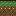
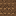
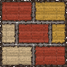
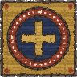
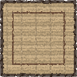
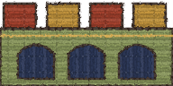
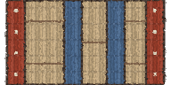

ground_top
48x48
ground_fill
48x48
masonry
48x48
roundel_block
48x48
roundel_used
48x48
tower_top
96x48
tower_body
96x48
gonfanon48x144
goal_pole64x384
ship160x96
hill160x64
hall160x128
motte128x128
canopy48x26
trunk48x48
health_empty240x30
health_full240x30
aura128x152
sand_top48x48
sand_fill48x48
timber48x48
log48x48
log_pile80x96
spout48x192
manicule90x56
cloud_top48x48
cloud_fill48x48
cloud_block48x48
cloud_band48x24
star_board144x22
wind_head96x96
eden_top48x48
eden_fill48x48
longship288x110
gust192x48
searock48x48
seaweed48x96
drawbridge48x26
bridge_axe48x96
flail_ball24x24
chain_link12x12
vault48x48
lift144x22
border384x64
inscription900x44
title500x44
castle_keep288x264
castle_sea_tower240x288
castle_stone336x264
castle_great_hall336x288
castle_abbey288x288
castle_round_tower240x300
crypt_entrance192x216
crypt_exit144x288
castle_harbour_gate264x264
wreck288x216
castle_beacon216x300
castle_paradise_gate240x264
castle_fountain240x240
castle_eden_bower240x252
ui_joy_base180x180
ui_joy_knob80x80
ui_run112x112
ui_pause52x52
ui_jump_rubeus140x140
ui_jump_azura140x140
ui_jump_verdain140x140
ui_jump_aurelia140x140
fire48x48 · burning pit (kills), flickers between two frames
checkpoint44x96 · halfway banner: unclaimed, claimed
bezant24x24 · spinning gold bezant (the coin)
linen960x540
far960x540, tiles horizontally
near960x540, tiles horizontally
forest_far960x540
forest_near960x540
crypt_far960x540
crypt_near960x540
castle_far960x540
castle_near960x540
shore_far960x540
shore_near960x540
deep_far960x540
deep_near960x540
sea_near960x540
creation_far960x540
creation_near960x540
waters_far960x540
eden_near960x540


 boss; surfaces from the sea, spouts water, snaps; knights must jump on its scaly back and strike the eye
boss; surfaces from the sea, spouts water, snaps; knights must jump on its scaly back and strike the eye